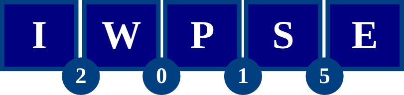
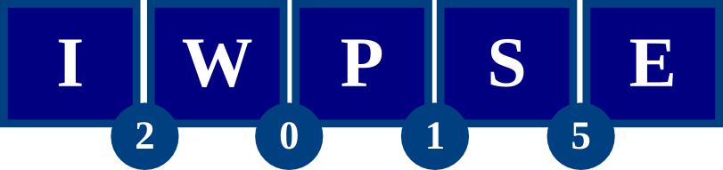

Call for Papers
IWPSE'2015 invites high-quality papers presenting experiments, surveys, approaches, techniques and tools related to the evolution of software systems.
4 May 2015
28 May 2015
11 May 2015
5 June 2015
22 June 2015
29 June 2015
15 July 2015
The 2015 edition of IWPSE will be held in Bergamo, Italy, as a co-located event of ESEC/FSE 2015, the 10th joint meeting of the European Software Engineering Conference and the ACM SIGSOFT Symposium on the Foundations of Software Engineering.
Main topic: Replication
The acceptance of empirical hypotheses should be supported by several and diverse types of replications. Replication studies make a critical evaluation of previous empirical studies for overlooked factors of the initial studies, for instance:
- a) initial assumptions have evolved / changed / are not relevant anymore.
- b) limited generalization, including: aspects that were previously ignored but that may affect the conclusions, conclusions that might only apply to certain types of applications, relations that have only been tested in certain types of applications but there are reasons to believe that it will not hold for other types of applications, etc.
- c) examples of inconsistent or divergent results across studies about the same phenomena, including alternative hypotheses or differences in the experiment that could explain the divergence of results.
There are different types of replication depending on whether or not the experiment (model, variables and statistical method) and the data are the same. For instance,
- a) Same experiment & Same data: aimed at evaluating the certainty of current knowledge (i.e., confirming or disputing previous results).
- b) Different experiment & Same data: aimed at improving the model.
- c) Same experiment & Different data: aimed at identifying limitations to the generality of the conclusions (or to problems with the data).
The first two types of replication are likely to be underreported due to the low contribution attributed to confirmatory results, and to their obliviousness with issues of the initial studies (either from the data or from missing variables). Nevertheless, they are crucial to understand the sensitivity of the conclusions to the variables analyzed.
We are also interested in meta-studies that analyze the replicability of empirical studies on software evolution, i.e., are all the details needed reported? at sufficient detail? to what extent original data can be reanalyzed? and to what extent the original experiment can be followed?
 

General call
Research in software evolution and evolvability has been thriving in the past years, with a constant stream of new formalisms, tools, techniques, and development methodologies. Research in software evolution has two goals. The first is to facilitate the way software systems can be changed so they become long-lived; this includes coping with demands from users and with the increasing complexity and volatility of contexts in which such systems may operate. The second goal is to understand and if possible control the processes by which demand for these changes come about.
Topics of interest include, but are not limited to:
- Application areas: distributed, embedded, real-time, ultra large scale, and self-adaptive systems, web services, mobile computing, information systems, systems of systems, etc.
- Paradigms: support and barriers to evolution in aspect-oriented, agile, component-based, and model-driven software development, service-oriented architectures,etc.
- Technical aspects: co-evolution and inconsistency management, impact analysis and change propagation, dynamic reconfiguration and updating; architectures, tools, languages and notations for supporting evolution, etc.
- Managerial aspects: effort and cost estimation, risk analysis, software quality, productivity, process support, training, awareness, etc.
- Empirical studies related to software evolution.
- Mining software repositories approaches and techniques supporting software evolution.
- Industrial experience on successes and failures related to software evolution.
- Interdisciplinary approaches: adaptation of evolutionary concepts and measures from other disciplines (biology, geology, etc.) to software evolution.
- Theories and models to explain and understand software evolution.
Submission
Four types of submissions are possible (see panel on the right). All submissions must be in English and must be submitted electronically via the EasyChair submission system.
Papers must not exceed the indicated number of pages, including all text, references, appendices, and figures (submissions exceeding the page limits will be rejected by the PC Chairs without review). All accepted papers will be published by ACM as a companion volume of the ESEC/FSE 2015 conference proceedings, and made available in the ACM Digital Library. Submissions must be original work, and must not have been previously published, nor be under consideration for publication, elsewhere (see also ACM policy and procedures with respect to plagiarism). Papers must be submitted as PDF and strictly adhere to the ACM proceedings format.
Contact address for general queries: Gregorio Robles and Ángela Lozano.